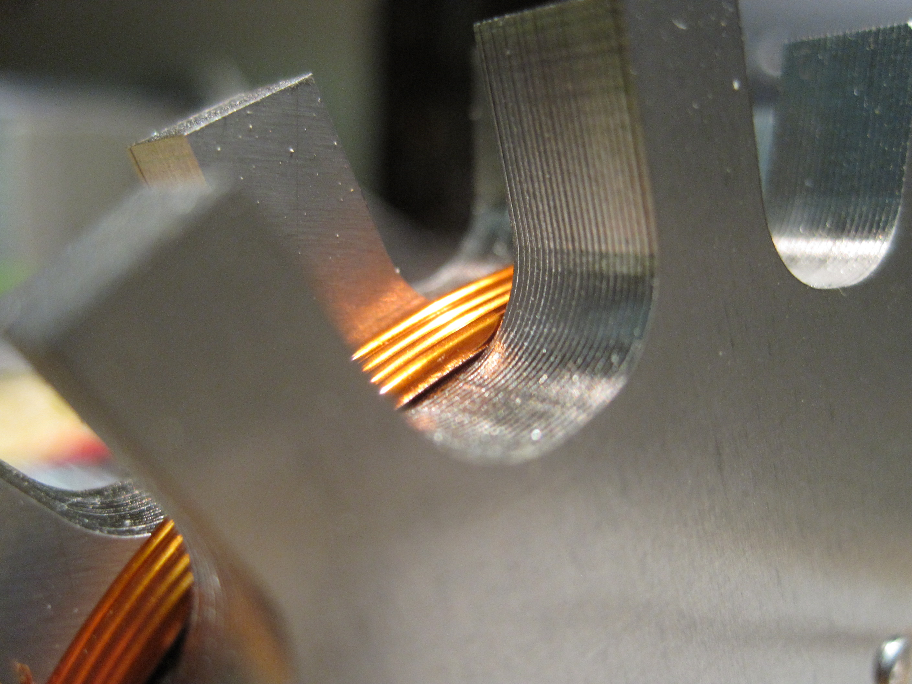

Projects
|
Smaller Projects
From weekend projects to older work, here are some of my creations of a smaller scope. |
|
|
Occlusion Device for Liver Resection
Fall 2011 In Alex Slocum's Precision Machine Design (2.75), my team and I developed a proof-of-concept prototype of a semiautomatic occlusion device for liver resection. |
|
|  |
Transverse Flux Electric Motor
Fall 2011 I'm designing and building a small transverse flux electric motor. I'll mount it as a hub motor on my bike when it's finished. |
|
A Better Tire Changing Experience
Spring 2011 My eight person team redesigned the tire changing experience with a focus on eliminating knowledge constraints, minimizing physical effort, and keeping the driver clean and organized throughout the seamless process. |
|
|
Desktop Lathe
Spring 2011 I headed the team that designed and built the best performing desktop lathe of the year in 2.72. |
|
|
MASLAB robot
January 2011 Team 2, comprised of four excellent engineers living on my hall, created the robot that took 1st place in the 2011 MASLAB competition. As the mechanical engineer, I was in charge of designing and fabricating a reliable and robust machine within a couple days. |
|
|
3-axis CNC Desktop Mill
Fall 2010 I designed this mini mill for the final project in MAS.863. It is built out of waterjet-cut aluminum and can be controlled manually or with steppers and a CNC system. The machine is stiff enough to cut through aluminum and has low vibration. It employs flexures and compliant motor mounts to avoid overconstraint. |
|
|
How to Make Almost Anything
Fall 2010 This links to another website that I created to document all of the projects that I completed during my semester taking MAS.863: How to Make Almost Anything. The class, taught by Neil Gershenfeld of the Media Lab's Center for Bits and Atoms, covers topics from 3D printing to microcontroller programming. My projects include a composite paddle and cast alloy piece. |
|
|
Dash: In-store Spice Dispensing Machine
Fall 2010 My twenty person team conceived and prototyped a spice dispensing machine for use in a grocery store. The customer selects a spice blend at the touchscreen, and a recipe-sized serving is dispensed in seconds. In addition to ideation and brainstorming, I did detailed design on the frame and collaborated on the door and carousel components. |
|

|
Money Money Yo-yo
Fall 2010 This yo-yo, designed for my manufacturing class, 2.008, was the top pick at the final review. |
|
Rush Projects
Fall 2010 Dormitory Exploration at East Campus (Rush) involves lots of building! I made a giant tensegrity structure and laminar flow experiment. |
|

|
Stereolithography Experiments
Summer - Fall 2010 I conducted several experiments with photopolymers and LCDs in order to test the feasibility of macro direct-mask-projection stereolithography. |
|
Fiberoptic Light Glove
Summer 2010 This glove utilizes a high power LED and fiberoptic cables to bring light to your fingertips in order to facilitate the manipulation of small components in dark environments. |
|
|
Unicycle Build
Summer 2010 I made a unicycle that I can ride around! |
|
|
2.007 Robots
Spring 2010 My two robots, Cortes and Alvarado, placed 2nd in the annual 2.007 competition. |
|
|
Loft and Desk Build
Spring 2010 My sturdy loft spans the length of my room, freeing up floorspace and creating storage. My modified desk leaves an expansive area for work. |
|
|
Pulsatile Flow Simulator
Fall 2009 - Spring 2010 This machine simulates the pressures in a heart in order to simulate the flow of blood through the organ, providing an ideal platform for testing mitral valve repair devices on porcine hearts. |
|
|
Conceptual Design with SolidWorks
Fall 2009 Most people use CAD to design from the bottom up (from parts to assemblies). Alternatively, it can be used to work from the top down by starting with a layout that incorporates all the critical dimensions of a machine and generating dependent parts that can be adjusted parametrically. |
|

|
Shoe-Mounted Piezoelectric Transducer for Energy Harvesting
Summer 2009 I prototyped an energy harvesting shoe that utilizes bending piezoelectric polymer strips to harness the energy that is usually dissipated in a shoe's compliant heel. |
|
Pattern in Digital Roots of Fibonacci Numbers
Spring 2009 I proved that digital roots of fibonacci numbers yield a repeating pattern. |